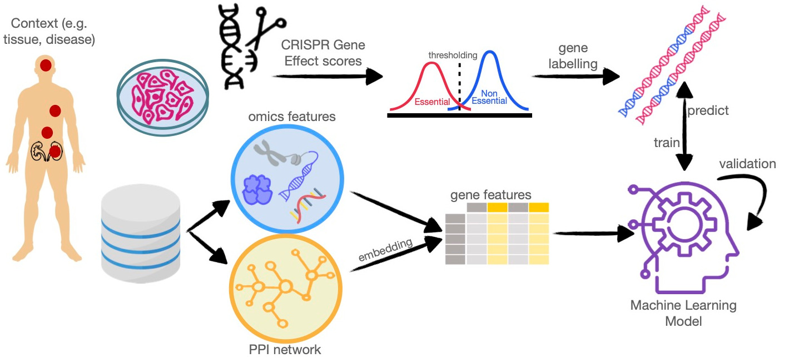

Welcome to HELP’s documentation!¶
Essential genes are commonly defined as those required for the growth and survival of any organism or cell. HELP stands for “Human Gene Essentiality Labelling & Prediction”, a computational framework for labelling and predicting essential genes. Its double scope allows achieving the identification of genes through the dependency or not from experimental data. HELP is a library of tools useful for the identification of domain-specific context genes that can highlight multiple levels of essentiality, and thus significance in the functional role of genes.
This is the Big Picture to understand the HELP approach.
NOTES:
PACKAGE REFERENCE: